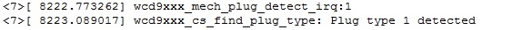
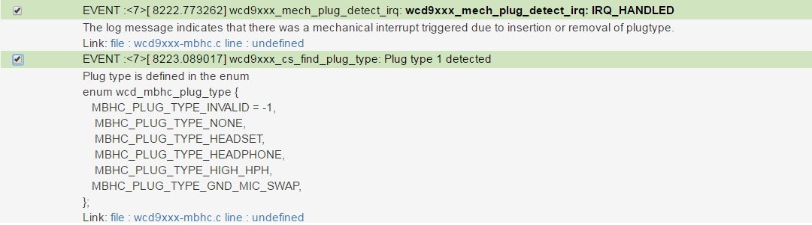

Smart Log Analytics is a company that provides software related to Log Processing which help in
root causing issues easily and help in log managment for future reference.
The featrues supported are
Module based Dynamic filtering of Logs
Log level ( Debug , Info , Warning , Error) based Dynamic filtering of Logs
Replacement of numbers from enums or #defs into strings for easy interpretation of Logs without referring to source code .
Verbose meaning of logs message incase they are not self explanatory.
Direct reference to the source code from log line indicating from whihc part of the code the log is getting printed
Facilitates adding developer analysis about log lines so that it is shared accross team
Helps different team members to understand log messages from code not developed by them
Static code analysis that result in output as recommnetation improving the log message / debug message
Interface to add information about the Functions that can replace adding Function header in code that make
Mechanism to add web based documentation about code which becomes available to developer group within team /organization

Figure:Sample Input of log lines as normal text
The log lines are in normal text format and dont have information from which module they are coming from and from which line of the code they are printed from . Also the numbers in the log mean something whihc can be known only on referring to the code . This takes time.

Figure:Sample Output of Smart Log Analytics after processing the log lines above
Smart Log Analytics process and provides o/p where one can understand what the log means and refers to the code and module from where it comes . The information can be extended in other ways based on the context .